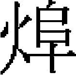

外國三
安南
安南，古稱交趾，本漢日南郡地。唐高宗調露元年，改安南都護府，隸嶺南道，「安南」之名始此。後梁貞明中，始爲土豪曲承美所據。南漢劉隱伐承美，執之，并其地。尋爲愛州將楊延藝所據，州將吴昌岌復奪之，傳其弟昌文。宋開寶七年，遣使朝貢，始封交趾郡王，自是棄爲外域。後爲其將黎桓所篡，桓之後又爲大校李公藴所篡。公藴之後昊旵無子，以女昭盛主國事。理宗紹定三年，昭盛讓位於其夫陳日煚，陳氏遂有其國。宋景定三年，封日煚爲太王，以其子光昺爲國王。
憲宗七年，大將兀良合台既平大理，移兵向交趾，三遣使諭降，皆不返，於是分道進攻。師抵洮江，日煚遣兵乘象拒戰。兀良合台子阿朮，年十八，率善射者射其象，象驚奔反蹂，其衆遂大潰。明日，日煚斷扶鹵橋，對岸而陳。大軍未測水深淺，沿江仰空射之，矢墮水而不浮，知爲淺處，即以騎兵濟。日煚敗走，斬其宗子富良侯。入都城，得前所遣三使，出之獄，以破竹束體入膚，比釋縛，一使死，遂屠其城。留九日，以炎暑班師，更遣二使招日煚來歸。日煚自海島還，見國都殘毁，大憤，乃縛二使遣還。會日煚傳國與子光昺，改元紹隆，遣其女壻以方物來見。兀良合台送詣行在所，别遣納剌丁往諭之曰：「昔吾遣使通好，爾等執而不返我，是以有去年之師。以爾主播越草野，復令二使招安還國，又縛還我使。今特再加開諭，如果矢心内附，則國主親來。若猶不悛，明以報我。」光昺得書，遽納款，且曰：「俟降德音，即遣子弟爲質。」
世祖中統初，以禮部郎中孟甲、員外郎李文俊充正副使，持詔往諭曰：「祖宗以武功創業，文化未修。朕纘承丕緒［一］，鼎新革故，務一萬方。適聞爾邦有向風慕義之誠，念卿昔在先朝已嘗臣服，遠貢方物，故頒詔旨，諭爾國官僚士庶。凡衣服、典禮、風俗，一依本國舊制。已戒邊將，不得擅興兵甲，侵爾疆埸［二］，亂爾人民。各宜安治如故。」光昺即遣其通侍大夫陳奉公等詣闕獻書，願臣附。帝封光昺爲安南國王，賜西錦三、金熟錦六，并授虎符。復降詔曰：「卿既委贄爲臣，其自中統四年爲始，每三年一貢。可選儒士、醫人及通陰陽卜筮、諸色人匠，各三人，及蘇合油，光香、金銀、丹沙、沈檀香、犀角、玳瑁、角牙、綿、白磁盞等物同至。」仍以納剌丁充達魯花赤，往來其國。光昺遣其員外郎楊安養等入謝，帝賜玉帶、繒帛、藥餌、鞍轡有差。
至元二年，賜光昺曆，並頒改元詔。光昺復遣楊安養上表三通：一定所貢方物，二免索儒、醫、工匠人，三願請納剌丁長爲本國達魯花赤。帝許之。四年，復下詔諭以六事，曰：「凡親附之國君長親朝，子弟入質，編民數，出軍役，輸納賦税，仍置達魯花赤統治之。以數事表來附之，深誠也。鄉令來貢不逾三年之期，其誠可知。故告以我祖宗之法，亦以誠諭。且君長來朝，子弟入質，籍民、定賦，出軍相助，古亦有之，豈今日之創制哉？略舉出軍一事，無以征行遠戍爲慮。但來人楊安養稱，有占臘、山獠之患。彼二寇如能降伏，復有何事？交兵之道，孰以爲易？倘不用命，必當討伐。况汝來奏，嘗有『一家人』之言。今聞納剌丁在彼中，多回鶻禁約，不使交談。果如所言，一家之禮，豈有如此耶？君臣之義，實同父子，豈有臣子而背其君父者？當熟思以全終始之義。」
五年，以忽籠海牙代納剌丁爲達魯花赤，張庭珍副之。光昺立受詔，庭珍責以大義，使下拜，既而曰：「汝朝官爾，我王也，何得與抗禮？」庭珍曰：「『王人雖微，序於諸侯之上。』况天子命我爲安南之長，位居汝上邪？」光昺語塞。中書省復移牒光昺，言其受詔不拜，待使介不以王人之禮，引《春秋》之義責之。光昺復書言：「本國欽奉天朝，已封王爵，豈非王人乎？天朝奉使，復稱王人，與之均禮，恐辱朝廷。况本國前奉詔旨，悉依舊俗，凡受詔令，奉安正殿而退避别室，此本國舊典也，惟閣下察之。」中書省復移牒切責曰：「考之《春秋》，叙王人於諸侯之上，《釋例》云：『王人，蓋下士也。』夫五等邦君，外臣之貴也。下士，内臣之微者也。以微者而加貴者之上，正以王命爲重也。後世列王爲爵，諸侯之尤貴者，顧豈有以王爵爲人者乎？王寧不知而爲是言耶？抑辭令臣誤爲此言邪？至於天子之詔，人臣當拜受，此古今通義。乃循舊俗，奉安正殿而退避别室，王豈能自安於心乎？前詔所言，蓋謂天壤間不啻萬國，國各有俗，驟使變革，有所不便，故聽用本俗。豈以不拜天下之詔爲從俗哉？且王之教令行於國中，臣子有受而不拜者，則王以爲何如？」
是年，光昺遣范崖、周覽入貢。
七年，以葉式捏爲安南達魯花赤。光昺遣黎佗、丁拱垣入貢，表言：「微臣僻在海隅，得霑聖化，與函生驩抃鼓舞。乞念臣自降附上國，雖奉三年一貢，然往來使臣疲於奔命，未嘗一日休息。至天朝所遣達魯花赤，辱臨臣境，動有挾持凌轢小國。雖天子明並日月，安能照及覆盆？且達魯花赤可施於邊蠻小醜，臣既席封爲一方屏藩，而反立達魯花赤以監臨之，寧不見笑他國？復望聖慈矜恤，凡天朝所遣官，乞易爲引進使，庶免達魯花赤之擾。」
十二年，帝復降詔曰：「祖宗定制，凡内附之國，君長親朝，子弟納質，籍户口，輸歲賦，調民助兵，仍置達魯花赤統治之。此六事，往年已諭卿矣。歸附踰十五年，未嘗躬自來覲，數事竟未舉行。雖云三年一貢，所貢之物，皆無補於用。謂卿久當自悟，略而不問，何爲迄今猶未知省？故復遣合撒兒海牙往爾之國，諭卿來朝。倘有他故，必不果來，可令子弟入朝。此外本國户口，若未有定籍，輸賦、調兵，何由斟酌？苟爾民實少，多取之，力將不及。今籍爾户口，蓋欲量其多寡，以定兵賦之制。其所調兵，亦不令遠適他所，止從雲南戍兵，相與協力而已。」光昺遣黎克復、黎文粹上表謝罪。八年，遣馮莊、阮元入貢。九年，又遣童子野、杜本入貢。十一年，遣黎克復、黎文粹入貢。會大兵平宋，克復等由湖廣還國。
十四年，光昺卒，國人立其世子日烜，遣中侍大夫周仲顔、中亮大夫吴德邵來朝。帝遣尚書柴椿等持詔，趣日烜赴闕。先是，使傳之通，止由鄯闡、黎化間。至是，帝命椿自江陵直抵邕州，以達交趾。椿等至邕州永平寨，日烜遣人上書，謂：「近聞國使辱臨敝境，邊民無不駭愕，不知何國人使？」椿回牒曰：「禮部尚書等官奉上命，以事由邕州入爾國，所有導護軍兵，合乘驛騎，宜來界首遠迓。」日烜使御史中贊知審判院事杜國計先至，其太尉率百官自富良江岸來迎。日烜就館，見使者。宣詔畢，椿謂曰：「汝國内附二十餘年，汝父受命爲王，汝不請命自立，今復不朝，異日朝廷加罪，將何以逃其責？」日烜仍舊例設宴於廊下，椿等弗就宴。既歸館，日烜遣范明宇來謝罪，改宴集賢殿，自言：「先君棄世，予初嗣位，天使之來，使予憂懼交并。竊聞宋主幼小，天子憐之，尚封公爵，於小國亦必加憐。若親朝之禮，予生長深宫，不諳風土，恐死於道路。俟天使歸，謹上表達誠，兼獻異物。」椿曰：「宋主年未十歲，亦生長深宫，如何亦至京師？但詔旨之外，不敢聞命。且我實來召汝，非取賂也。」椿等還，日烜遣范明宇、鄭國瓚、杜國計奉表陳情，言：「孤臣禀氣衰弱，且道路險遠，徒暴白骨，致陛下哀傷，無益天朝之萬一。伏望憐臣，得與鰥寡孤獨保其性命，以終事陛下。此孤臣之至幸，小國生靈之大福。」兼貢馴象二。廷議以其飾辭抗命，延引歲月，宜進兵境上，遣官問罪。帝不從，復遣尚書梁曾再諭日烜來朝：「若果不能親至，則積金以代其身，兩珠以代其目，副以賢士、方技、工匠各二，以代其民。不則修爾城池，以待天兵之至。」日烜遣其叔父遺愛來朝。
十八年，立安南宣慰司，以卜顔帖木爾爲使，别設僚佐，日烜拒弗納。帝下詔曰：「曩安南國王陳光昺生存之日，嘗以祖宗收撫諸蠻舊例六事諭之，彼未嘗奉行。光昺既没，其子又不請命而自立。遣使召之，托故不至。今又以爲詞，故違朕命，止令其叔父入覲。即欲興師致討，緣爾内附入貢有年矣，其可效爾無知之人，枉害衆命？爾既稱疾不朝，今聽汝以醫藥自養，故立汝之叔父遺愛代汝爲安南國王，撫治爾衆。其或與汝百姓輒有異圖，大兵深入，戕害性命，無或怨懟，實乃與汝百姓咎。」是年，日烜仍遣阮道學來貢。於是加柴椿行安南宣慰使都元帥，李振副之，以新副軍千人送遺愛之國。日烜戕殺之。
二十一年，又遣中大夫陳謙甫貢玉杯、金瓶、珠絛、金領及白猿、緑鳩等物。初，鎮南王脱歡奉命征占城，遣荆湖行省左丞唐兀 、右丞唆都將兵來會。帝疑安南與占城通牒，令軍行假道於其國，且責日烜運糧至占城助軍。仍命鄂州達魯花赤趙翥往諭之。比官軍至衡山縣，聞日烜從兄興道王陳峻提兵拒守境，上言本國至占城水陸俱不便，願獻糧退軍。及至永州，移文令日烜除道迎謁。至思明州，王復下令督之。至禄州，聞日烜阻兵邱温縣，邱急嶺隘路，遂分軍兩道並進：萬户李羅合答兒、招討使劉深爲西路，由邱温縣進；怯薛撒略兒、萬户李邦憲爲東路，由邱急嶺進。王以大兵繼之。復遣總把阿里諭以興兵之故，實爲占城，非爲安南也。至急保縣，安南兵阻，不得前。東軍破可離隘嬰兒關，獲間諜人杜偉等，斬之。至洞板隘，又遇安南兵，敗之。聞峻在内傍隘，進兵至變住邨，諭其收兵闢路以迎王師，不從。官軍分六道進攻，至萬劫江，盡破諸隘。峻尚擁船千餘艘，距萬劫十里而陣。各翼水軍連戰俱捷。王與行省官親臨東岸督之，奪船二十餘艘，峻敗走。官軍乘間縛栰爲橋，渡富良江。時西軍亦破支凌隘。明年正月，日烜自將十萬衆，與官軍大戰於排灘，元帥烏馬兒、招討使納海、鎮撫孫林德等敗之。日烜退守瀘江，又敗走，乃令阮效鋭奉書謝罪，且請班師。大軍渡江，壁於安南城下。
、右丞唆都將兵來會。帝疑安南與占城通牒，令軍行假道於其國，且責日烜運糧至占城助軍。仍命鄂州達魯花赤趙翥往諭之。比官軍至衡山縣，聞日烜從兄興道王陳峻提兵拒守境，上言本國至占城水陸俱不便，願獻糧退軍。及至永州，移文令日烜除道迎謁。至思明州，王復下令督之。至禄州，聞日烜阻兵邱温縣，邱急嶺隘路，遂分軍兩道並進：萬户李羅合答兒、招討使劉深爲西路，由邱温縣進；怯薛撒略兒、萬户李邦憲爲東路，由邱急嶺進。王以大兵繼之。復遣總把阿里諭以興兵之故，實爲占城，非爲安南也。至急保縣，安南兵阻，不得前。東軍破可離隘嬰兒關，獲間諜人杜偉等，斬之。至洞板隘，又遇安南兵，敗之。聞峻在内傍隘，進兵至變住邨，諭其收兵闢路以迎王師，不從。官軍分六道進攻，至萬劫江，盡破諸隘。峻尚擁船千餘艘，距萬劫十里而陣。各翼水軍連戰俱捷。王與行省官親臨東岸督之，奪船二十餘艘，峻敗走。官軍乘間縛栰爲橋，渡富良江。時西軍亦破支凌隘。明年正月，日烜自將十萬衆，與官軍大戰於排灘，元帥烏馬兒、招討使納海、鎮撫孫林德等敗之。日烜退守瀘江，又敗走，乃令阮效鋭奉書謝罪，且請班師。大軍渡江，壁於安南城下。
明日，王入其國都，知日烜僭稱「大越國主憲天體道大明光孝皇帝」，禪位於太子，用「昊天成命之寶」，日烜即居太上皇位。見立國王，係日烜之子，行紹寶年號。所居宫室五門，額書「大興之門」，左右掖門，正殿九間，書「天安御殿」，正南門書「朝天閣」。時安南兵棄船登岸者猶衆，日烜引宗族官吏於天長、長安屯聚，峻復領兵船聚萬劫江口，整軍以待。
會唐兀、唆都等兵回自占城，與大軍合。分遣右丞寬徹，引萬户忙古、孛羅哈答爾由陸路，左丞李恒引烏馬爾由水路，敗其兵船。日烜遣其弟文昭王陳遹侯、鄭廷瓚拒戰於乂安，又敗。其兄子彰憲侯陳鍵復敗於海口，鍵以其兵降。越三日，鎮南王追敗日烜於大黄江。日烜懼，遣宗人忠憲侯陳陽請和，繼遣近侍陶堅奉國姝至軍中，乞罷兵。鎮南王遣艾千户諭之曰：「既請和，曷不躬來自議？」日烜不聽，至安邦海口，棄舟楫甲仗，匿山谷間。官軍獲船萬艘，擇善者乘之，餘皆焚棄。
日烜走清化府，其弟昭國王陳益稷率宗人秀嵈及妻子、官吏迎降。日烜遣宗人忠憲侯陳陽及阮鋭等來請和，王留之軍中。
諸將以安南人雖數敗，然增兵轉盛。暑雨疫作，死傷亦衆，占城既不可達，決計退兵。王不得已，引軍還。
至如月江，日烜遣兵躡其後。行至册江，未及渡，林箐伏發，唆都、李恒皆中流矢死，官軍力戰，始護王出境，亡者過半。阮鋭逃伏草澤中，欲罷去，官軍獲斬之。此至元二十二年之一敗也。事聞，帝震怒，乃罷征日本兵，大舉伐安南。
二十三年四月，詔曰：「曩以爾國既稱臣服，歲輸貢獻，而不躬親入朝。因彼叔父陳遺愛來，以安南事委之，至則爲其戕害。所遣達魯花赤，又却之不納。至於用兵占城，略不供給，以致鎮南王脱歡進兵。今因爾國近親陳益稷、陳秀嵈慮宗國覆滅，殃及無辜，屢勸爾來朝，終不見從。自拔來歸，朕憫其忠孝，特封益稷爲安南國王，陳秀嵈爲輔義公，以奉陳祀。申命脱歡、奥魯赤興兵平定其國。前此罪戾，止於爾之身，吏民無有所預。詔書到日，其各歸田里，安生樂業。」
是年，日烜遣阮義全、阮德榮入貢，帝留義全等於京師。湖南省臣線哥上言：「連歲征日本及用兵占城，百姓罷於轉輸，士卒觸瘴癘多死傷，羣臣愁歎，四民廢業。今復有事交趾，動百萬之衆，非所以恤士民也。宜寬百姓之力，積糧餉，繕甲兵，俟來歲天時稍利，然後大舉未晚。」詔今歲令益稷暫駐鄂州。
明年，以阿八赤爲征交趾行省左丞，發江淮、江西、湖廣三省蒙古、漢、券軍七萬人，船五百艘，雲南兵六千人，海外四州黎兵萬五千人，海道萬户張文虎等運糧十七萬石，分道討安南。以奥魯赤平章政事，烏馬爾、樊楫參知政事，並受鎮南王節制。日烜遣中大夫阮文通入貢。
十一月，師次思明州，留兵二千人，以萬户賀祉、張玉統之。令右丞程鵬飛將漢、券兵萬人由西道入永平，奥魯赤將萬人從王由東道入女兒關。楫與烏馬爾帥舟師由海道，經玉山、雙門、安邦口，遇敵船四百餘，擊敗之，奪其船。鵬飛經老鼠、陷沙、茨竹三關，十七戰，皆捷。鎮南王進次茅羅港，攻浮山寨，破之。王命鵬飛以兵二萬人守萬劫口，且修普賴、至靈二山栅。命烏馬爾、阿八赤合水陸兵徑薄安南城。王帥諸軍渡富良江，次城下。日烜走敢喃堡。王攻城，下之。
二十五年正月，日烜及其子走入海，追之不及。遣烏馬爾由大滂口迓文虎糧船。會文虎船至雲屯山，遇敵兵，殺略相當。至緑水洋，敵船益衆，度不支，且船膠不可行，乃沈米於海，而自趨瓊州。時官軍乏食，分道入山求糧。王自引兵還萬劫。阿八赤將前鋒奪關繫橋，破三江口，攻下堡三十二，得米十一萬三千餘石。烏馬爾由大滂口趨塔山，遇敵船千餘，敗之。至安邦海口，迎文虎糧船不至，復還萬劫，得米四萬餘石，分兵屯普賴、至靈二栅。日烜遣從兄興寧王陳嵩屢來約降，故老我師。夜，又遣敢死士劫諸將營。鎮南王怒，命萬户解震焚其都城，左右諫止之。
神拏總管賈若愚獻言曰：「師可還，不可守。」諸將又言：「天時已熱，糧且盡，宜還師。」王從其言。命楫與烏馬爾由水道先發，爲安南兵所邀截，全軍覆没。鵬飛簡鋭卒護王還，次内傍關，安南兵大集，賴萬户張均以精鋭三千人殿，力戰出關。諜知日烜分兵三十餘萬，守女兒關及邱急嶺，連亘百餘里，遏歸路。諸軍戰且行，安南人乘高發毒矢，張玉、阿八赤皆死之。王由單已縣趨盝州，間道至思明州，命奥魯赤以諸軍北還。日烜隨遣近侍官李修、段可容貢方物，且進代身金人贖罪，并歸所獲俘，悉黥其額曰「天子兵」，或黥曰「投南朝」云。此至元二十五年之再敗也。
是年十二月，帝復召諭日烜曰：「爾表稱伏罪，似已知悔。據來人代奏，謂爾自責者三：被召不來，一也；脱歡撫軍而不迓，二也；唆都根底遮當，三也。若蒙赦宥，當遣質子、進美姬、歲貢方物。凡兹繆敬，將焉用此？若果出誠款，何不來此面陳？安有聞遣將，則遂事逋逃；見班師，則聲言入貢？以斯奉上，情僞可知。爾試思，與其嶺外偷生，無慮兵禍，曷若闕庭歸命，被寵榮歸？二策之間，孰得孰失？爾今一念違誤，係彼一方存亡，故遣遼東提刑按察司使劉廷直、禮部侍郎李思衍、兵部郎中萬奴，同唐兀、合散、瓮吉利等，引前差來阮全等二十四人，回國親諭。朕當悉宥前愆，復爾舊封。或更遲疑，決難寬恕。」
明年三月，廷直等至安南，日烜遣其中大夫陳克明等上表謝罪，具言：「已差從義郎阮盛從昔里吉大王赴闕。其烏馬兒、樊楫參政，方行津遣。樊參政病卒，火葬訖，千户梅世英、薛文正等護其妻妾還家。烏馬兒參政途中舟覆，溺於水而卒，其妻妾救出，俟續後資遣。軍人陷没者八千餘人，更行搜索，得頭目若干名、軍人若干名，並從天使回中國。」烏馬爾、樊楫實爲安南人所殺，表云楫病卒、烏馬爾溺死，皆掩飾之詞云。
二十七年，日烜卒，子日燇遣其臣嚴仲維、陳子良等來告哀，且請襲爵。表言：「六尺微孤，夙受父訓，於臣事天朝毋廢，歲貢一事，切切在懷。特遣中亮大夫嚴仲維、右武大夫陳子良等奉綱貢信物進獻。」帝簡張立道爲禮部侍郎，徵日燇親朝。日燇遣其臣阮代之。何維嚴等上表乞赦罪［三］，且約來歲詣闕。廷議：「必先朝而後赦。」日燇懼，卒不至。
復遣尚書梁曾、郎中陳孚再往諭曰：「汝國罪愆既已自陳，朕復何言？若云畏死道路，不敢來朝，且有生之類寧有長久安全者乎？天下亦復有不死之地乎？朕所未喻，徒以虚文巧飾見欺，於義安在？」日燇復遣陪臣陶子奇請罪，上萬壽頌、金册表。
帝惡其抗命，又議興師，遂拘子奇於江陵，命劉國傑與諸王昔里吉等同出師，分立湖廣、安南行省，給二印，市蜑船百斛者千艘，用軍五萬六千五百七十人，糧三十五萬石，馬料三萬石，鹽二十一萬斤。預給官軍俸賞，軍人、水手各鈔二錠。水陸分道齊發，令益稷隨軍至長沙。
會世祖崩，成宗嗣立，罷兵，乃遣子奇歸國。日燇上表慰國哀，並獻方物。遣侍郎李衎、郎中蕭泰登持詔諭之，曰：「朕嗣守大統，踐阼之始，大肆赦宥，無間遠近。惟爾安南，亦從寬卹，已敕有司罷兵。自今以往，所以畏天事大者，其審思之！」
元貞二年，日燇上表求封王爵，不允。乞《大藏經》，賜之。
大德元年，遣阮文籍、范葛入貢。自此至十年，安南凡五入貢云。
三年，丞相完澤等奏：「安南來使鄧汝霖，竊畫宫苑圖本，私買輿地圖及禁書，且私記北邊軍情、山陵諸事，宜責以大義。」遣尚書馬合馬、侍郎喬宗亮諭以：「汝霖等所爲不法，理宜窮治。朕以天下爲度，敕有司放還。自今使介，必須選擇。有所陳請，必盡情悃。勿憚改圖，致貽後悔。」
五年，命尚書馬合馬等送來使鄧汝霖等還國，諭安南依前三年一貢。
武宗即位，遣禮部尚書安魯威、兵部侍郎高復禮，頒即位詔於安南，曰：「惟我國家以武功定天下，文德懷遠人。乃眷安南，自乃祖乃父世修方貢，朕甚嘉之。邇者先皇晏駕，朕方撫軍朔方，爲宗戚元勳所推戴，謂朕乃世祖嫡孫，裕皇正派，宗藩效順於外，臣民屬望於下，人心所共，神器有歸。朕俯徇輿情，已於上都即位。今遣尚書阿里灰諭旨，尚體同仁之視，益堅事大之誠。輯寧爾邦，以稱朕意。」
是年，安南遣阮克遵、范欹資入貢賀即位。至大二年，又遣童應韶、謝大薰入貢。
仁宗即位，世子陳日套遣使來朝，以禮部尚書乃馬台、吏部侍郎聶古伯、兵部郎中杜與可使安南，頒改元詔曰：「惟我祖宗受天明命，撫有萬邦，威德所被，柔遠能邇。乃者先帝龍馭上賓，朕以王侯臣民不釋之故，已即位於大都。其以明年爲皇慶元年，今遣尚書乃馬台等齎詔宣諭，仍頒新曆一本。卿其敬授人時，益修臣職，毋替爾祖事大之誠，以副朕不忘柔遠之意。」
皇慶二年，安南兵三萬餘人，突犯鎮安州，復分兵犯歸順州，屯聚未退。其世子復親領兵陷養利州，聲言：「知州事趙珏擒我思浪州商人，取金一碾，侵田千餘頃，故來讐殺。」樞密院使千户劉元亨赴湖廣詢察。元亨親詣上、中、下由邨。牒諭安南國曰：「昔漢置九郡，唐立五管，安南實聲教所及之地。况獻圖奉貢，上下之分素明；厚往薄來，懷撫之惠亦至。聖朝果何負於貴國！今乃自作不靖，狡焉啟疆。雖由邨之地所繫至微，而國家輿圖所關甚大。兼之殺掠者，皆朝廷屬籍編户，省院未敢奏聞。未審不軌之謀，誰實主之？」安南回牒云：「邊鄙鼠竊輩自作不靖，本國安得而知？」且以重賂至。元亨復牒，責以飾辭不實，卻其賂，且曰：「南金、象齒貴國以爲寶，而使者以不貪爲寶。請審察事情，明以告我。」然道里遼遠，情詞虚誕，終莫得其要領。元亨上言：「曩者安南人嘗侵永平邊境，今復倣效成風。爲今之計，莫若遣官宣諭，歸我土田，返我人民。仍令當國之人，正其疆界，究其首謀開釁之人，戮於境上，申飭邊吏毋令侵越。更於永平置寨募兵，設官統領，給田土、牛具，令自耕食，編立部伍，明示賞罰，令其緩急首尾相應。如此則邊境安静，永保無虞。」事聞，勅俟安南使至諭之。
延祐三年，命湖廣行省諭安南歸占城國王。先是，安南人攻占城國，執其王以歸，兵還，迎拜詔書，乃上表謝罪焉。
七年，日套卒，世子日爌遣陪臣鄧恭儉、杜士游來貢。
英宗至治元年，遣吏部尚書教化、禮部郎中文矩，頒登極詔。
泰定帝即位，詔安南國世子陳日爌曰：「我國家誕膺景命，撫綏萬邦，德澤普加，靡間華夏。乃者先朝奄棄臣民，朕以裕皇嫡孫，爲宗室大臣推戴，爰自太祖肇基之地入承天叙，其以甲子歲爲泰定元年。今遣尚書馬合謀、禮部郎中楊增瑞齎詔播告，賜爾《授時曆》一帙。惟乃祖乃父修貢内附有年矣，我國家遇卿良厚。以占城守臣上表，稱卿之邊吏累發兵相侵，朕爲惻然於中。不知卿何爲至是？豈信然邪？朕君臨天下，視遠猶邇，務輯寧其民，俾各得所。卿其體朕至懷，戒飭士衆，慎保乂民，俾毋忘爾累世忠順之意。」日爌遣陪臣莫節夫入賀。
二年，寧遠知州添插言：「安南士官押那攻掠其本末諸寨。」敕押那歸其俘。三年，安南將阮叩侵思州路，命湖廣行省飭兵備之。
先是，陳益稷久居鄂州，遥授湖廣行省平章，其妻、子皆爲本國所害。當成宗朝，賜漢陽田五百頃俾自贍，既而奪之。武宗憫其老，重加恩命，制曰：「委贄歸朝，既去逆而效順；以爵馭貴，宜崇德而報功。誕播明綸，用孚衆聽。爾陳益稷，知畏天者事大，期保境以安民。慕帝王之有真，見幾而作；懼祖宗之不祀，自拔而來。以忠孝之誠，受知於世皇，蒙天地之德，錫封於故國。始者周王之赫怒，伐罪弔民；終焉堯、舜之誕敷，班師振旅。彼迷不復，爾守彌堅。拯溺救焚，從王師凡一再舉；授餐適館，留湖右幾三十年。身歷事於四朝，志不渝乎初節。肆朕即阼，亟其來庭，是用加新秩以示恩，乃舊封而授職。於戲！内寧外撫，朕不忘銅柱之南；近悦遠來，爾益拱星辰之北。對揚休命，永堅一心。可加金紫光禄大夫、安南國王，給田如故。」文宗天曆二年卒，年七十六，賜錢五千緡，諡忠懿。
三年，世子陳日

遣其臣鄧世延等二十四人來貢。至順元年，有廣源賊閉覆寇龍州羅回洞，龍州萬户移文詰安南，其回牒言：「自歸天朝，恪共臣職，彼疆此界，盡屬一統。豈以羅回原隸本國，遂起争端？此蓋邊吏生釁，假閉覆爲名，爾理宜即加窮治。」命龍州萬户仍還所掠。次年，日遣其臣段子貞、黎克遜來貢。三年，遣吏部尚書撒只瓦等使安南。
惠宗元統二年，遣尚書帖住、禮部郎中智熙善使安南，以《授時曆》賜之。安南遣童和卿、阮固夫入貢，賀即位。
後至元元年，封其世子陳端午爲國王。日退而學道，自號太虚子，惟章表猶署己名。四年至六年，再遣使入貢。初，朝廷以日烜不請命自立，故日烜以下四世，俱稱安南世子。至端午，始封爲國王焉。
其國制度：分十三道、五十二府、二百一十九州縣，其實一道不及中國一郡。所至皆設學校。惟諒山有城，甎色紅紫，相傳爲馬伏波所築。王宫用黄瓦，簷高不過丈。民房以草苫覆門，僅三尺許，俯首出入。文字與中土同，外别作數十字，多加土傍以示異，亦止行於國中。其物産多稻，無麥，重蠶桑，有紬布，不植棉花。所在竹木成林，蔽天日。其用人：文職有三公、太尉、平章政事、輔國、左右僕射、參知政事、御史臺、翰林院、尚書等，武職有都元帥、節度使、大將軍、内殿前指揮使、招討使等。又有方鎮及世襲鄉邑官。每三年一考試，初試經義，次試四六，三試詩，四試策。各道取中三場者曰生徒，中四場者曰貢生，至會試中四場者曰進士，無定額。其氏族如阮、裴、吴、楊、陶、黄、武、宋、陳、程、梁、胡之屬，外無他姓。男女皆披髮，以香蠟斂之，不令散亂。又以藥塗其齒，使之黑而有光。無陰晴俱戴笠。見貴人曰翁茶，譯言大官也。食生肉，不設几席，豪家始有牀褥，平民率籍草而卧。好怪異，尚巫鬼，不奉二氏教。婚姻：富貴家用媒妁，遵禮制，貧家男女相悦，即備錢成夫婦，雖同姓不避。獨喪祭各依古禮，禁官民不得卜地，止許葬田中，惟國王始擇地於山上。兵無甲胄，止用火器、長刀、標鎗、藤牌之屬。臨陣以象爲重。草木四時不凋，晝夜無長短，古所稱日南者，殆不虚云。
【校勘記】
［一］「承」，原作「丞」，據《元史》卷二〇九列傳第九十六《安南》及徐一夔《明集禮》卷三二改。
［二］「疆埸」，原作「疆場」，《元史》卷二〇九列傳第九十六《安南》同，據徐一夔《明集禮》卷三二改。
［三］「何維嚴」，黎崱《安南志略》卷一四、陳孚《陳剛中詩集》附録《元史列傳》同，《元史》卷一六七列傳第五十四《張立道傳》及本書卷一七二《張立道傳》作「何惟嚴」。「上表」，原作「土表」，據《元史》卷一六七列傳第五十四《張立道傳》改。
本章完!